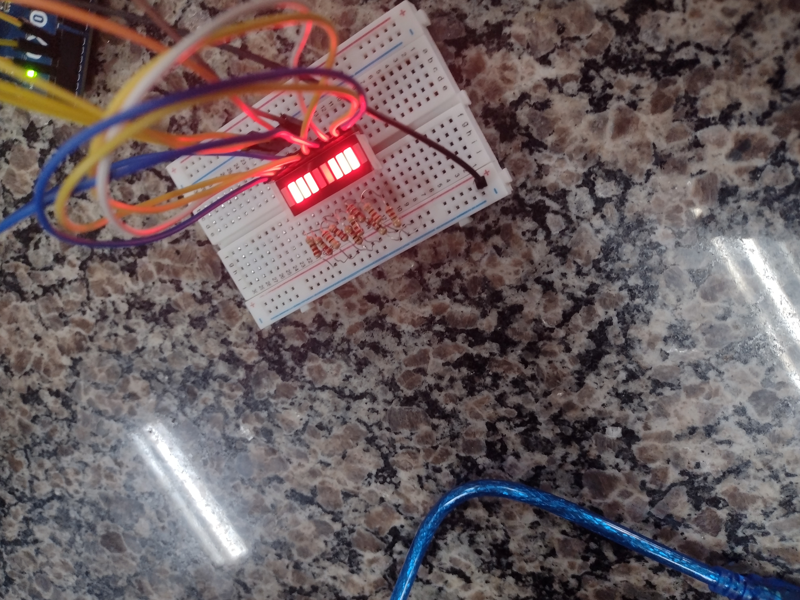

PROJETOS
Semáforo
discrição:
Semáforo é um sinal de trânsito que funciona como um instrumento de controle do tráfego de automóveis e pedestres nas estradas.
semáforo serve para auxiliar os motoristas e pedestres a se locomoverem com cautela nas vias de circulação das cidades.
e como trabalho fizemos um prototpo de um semafaro no arduinoNosso primeiro projeto foi fazer um semáforo usando leds vermelho, amarelo e verde. Para isso usamos placa onde colocamos os leds e conectamos os fios positivos em frente as perninhas positivas dos leds, um em cada led, e o negativo em um unico lugar onde fica as perninhas negativas dos leds. Fizemos um código no arduino editor e conectamos o cabo do arduino para ler o código. Na primeira foto nós fizemos um semáforo normal na segunda nós tentamos fazer um semáfaro de cruzamento mas não deu certo.
Push Bottom


Com o pushbottom nós acendemos os leds, na terceira foto pode-se ver que usamos um único led nas demais fizemos um semáforo de carro e um de pedestre que são liguados quando o pushbottom é apertado.
Super Maquina 2008
.png)
.png)
.png)
Em 2008, a série de tv “Super Máquina” foi relançada, com o nome “A Nova Super Máquina”. Nessa nova verção carro KITT era capaz de projetar imagens holográficas e se transformar em outros carros e formas. Além dessas alterações, o display frontal acendia em modo Fade-Out, mudando sutilmente a sinalização da Super Máquina.
Nesse projeto nós fizemos uma barra de led de 10 segmentos apresentar o mesmo efeito do display da Super Máquina 2008.
Super Projeto
Nosso professor pediu para fazermos um projeto para apresentarmos para a escola. Nós Crazy Students resolvemos fazer meio que um carro, vamos fazer os faróis frontais, pisca alertas e a buzina. A seguir vamos tar mostrando como nosso projeto esta indo.